Cornelis Trooststraat 35 III
1072 JB Amsterdam
Omschrijving
Kenmerken
Foto’s
Foto’s
(19)
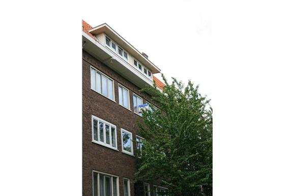
< Vorige foto
Volgende foto >
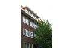
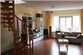
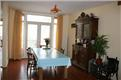
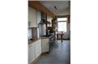
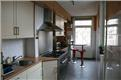
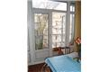
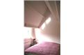
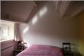
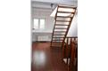
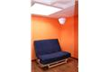
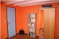
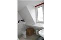
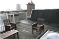
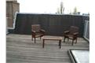
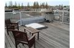
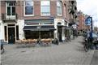
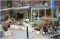
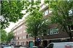
< Vorige foto
Volgende foto >
Bewaar deze woning
Volg (prijs-)wijzigingen
[popup content placeholder]